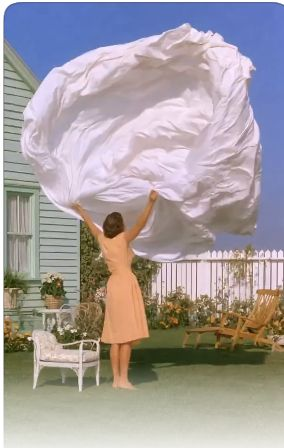
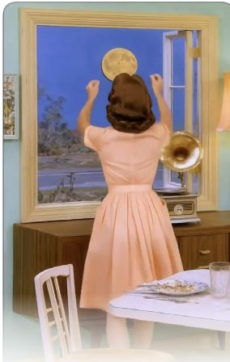

有生活的触感
原片定位截图 · 画面权利归相关权利人
本页为研究整理，原创故事尚未生成。
“我中意的是这里对视频的创意、故事。”
我们关注一个小愿望怎样变成动作，动作怎样改变世界，以及多个小事件怎样构成一支值得停留的短片。
查看故事方向与能力一图总览 ↗
01 / READ THE REFERENCE
平常的一天，
处处藏着另一种世界。
@VidusheWrites · “Loves sleeping”
约25.73秒 · 竖屏参考
到原帖观看完整视频 ↗
沿五处情境读原片。这里的分组与意义解释是我们的研究方法；画面事实、创作理解与复用建议分别记录。
截图为内置浏览器定位后裁取的可见画面，保留原页边缘渐变，非视频原件抽帧。时间为近似定位点，不能当作精确剪辑边界。完整运动以原帖为准。
02 / WHAT WE TAKE WITH US
留下的，是一种
构思故事的方法。
都与生活有一点关系。
讨论中最重要的一次修正
一个视觉包袱，还撑不起一整支片子。
最初的五个点子各自有趣，却没有都发展到完整短片的体量。你指出了氛围与长度不足的问题。因此档案保留两种阶段：故事种子记录奇妙规则与小事件；完整方向补上跨场景展开、事件联系和结尾回应。增加几个机位，不能自动补足内容。
它对我们的具体价值
效果 → 理解 → 可以做的事03 / STORY TERRITORIES
沿着四条方向，
长出自己的故事。
固定的是表达关系。
人物、物件、空间与季节，
可以继续变化。
希望留下的感觉亲近、松弛、被小小意外打动。
每次保留的关系小愿望 → 普通动作 → 可见变化 → 人物或世界的回应。
可变化的部分人物与年代、物件与地点、天气与光色、幽默或安静的比重。
需要避开的偏差只有特效、随机堆景、人物不断惊叫、全片依赖文字解释、为凑时长重复同一个包袱。
完整创作总纲与验收问题 ↗04 / THE STORY ARCHIVE
先把故事留下。
需要时，再接着往下做。
五个种子，两份完整方向。全部是本次讨论中的原创文字方案，尚未生成视频，也尚未选定实施。关联母题会相互链接，避免把同一个点子误当作已经完成的成片。
05 / ROOM TO GROW
这份理解，
还能用到哪里？
以下是可扩展用途。
当前交付为研究网页与文字档案，
还没有验证这些成片能力。
原片来源@VidusheWrites · Loves sleeping ↗
帖文账号不等于已确认的影片创作者。这里使用定位缩略图支持具体分析，未复制完整视频；原片画面权利归相关权利人，不声明素材具有开放再分发许可。
我们的判断意义解释、创作方法、可扩展用途与七份故事属于本次讨论和整理；不能归为原作者已声明的创作意图。
实际核对2026-11-15、11-16通过内置浏览器查看影片及定位画面；播放器时长约25.73秒。未完成声音听审，未知生成模型、提示词及原始工程。
当前状态研究与文字方案已归档，七份故事仍是待落地方案，视频未生成、参考效果未复现。网页发布与线上核验见发布记录，原有交互检查见验证记录；截图来源与权利范围见素材说明。